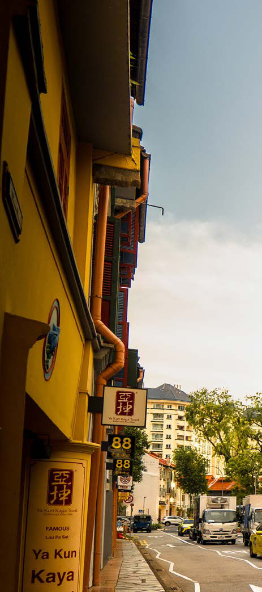

04FEATURES
Navigating complexity
Delivering modern building services within historic structures sits at the intersection
of engineering, regulation and stewardship. As conservation continues to shape
Singapore’s urban fabric, these projects demand teams with experience navigating
technical complexity, regulatory nuance and the realities of working within aged
structures.
The old bones hold stories. The new beats, the ACMV systems, the power backbones, the fire
protection networks threaded carefully through heritage walls, keep those stories liveable.
That is the work.

More than 7,000 buildings have been conserved since Singapore’s area-based
conservation programme began. The streetscape survives because the services inside it
were rethought.